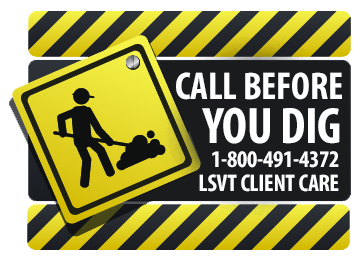
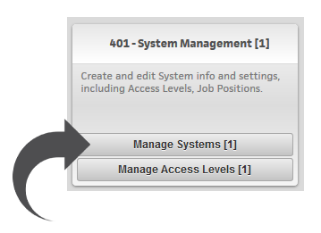
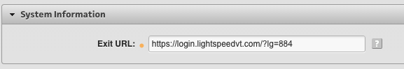
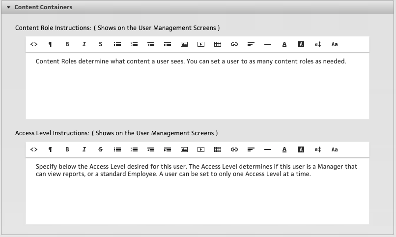
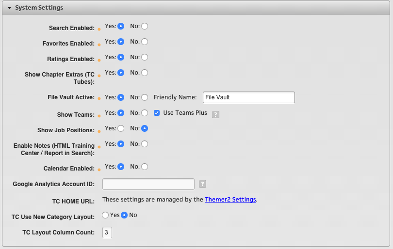

Overview
When your “Account” is initially created, the LSVT Team prepares your “System” for you as part of the initial setup process. Your organization is a “System” within the VT Platform, and in a prior Help Doc, we looked at the “LSVT Hierarchy” and saw how the Systems, Themes, and Locations all work together - as they are all under the umbrella of a “System.”
In this section, we will walk through the System settings so you understand what they are and how they work so that you can edit and administrate them as you need.
Note: Changing System Settings can affect all of your Themes, Locations and Users, so if you have questions - “Call Before You Dig.”

To get to the System Settings, first go to the Super User Dashboard, then open up the subsection labeled “400 - Application Administration” and you will see the tool called “401 - System Management” as shown below.

Once you select, this, you will be able to select which “System” to edit (or if you only have one, it will default to that one).
This next screen is a large one, and has lots of sections within it that expand and collapse to make them easier to get in and edit one area at a time. This Help Doc will walk you through and explain each section. Once you modify any settings in any of these sections, you will need to click the “SAVE” button at the bottom for them to be updated and saved.
System Information
- Exit URL
- This is the URL where a user will go once they sign out. Clicking the Sign Out button will first end the user's session with LightSpeed and then take them to the URL. Typically this is set to your front door sign in page.

Content Containers
- Content Role and Access Level Instructions
- Here you can customize the instructions that users/managers see on the front end when selecting Content Roles and Access Levels for users. Examples are:
- Content Roles: Content Roles determine what content a user sees, you can set a user to as many content roles as desired.
- Access Levels: Specify below the Access Level desired for this user - the Access Levels determine if this user is a Manager that can view reports, or just a standard Employee. A user can be set to only one Access Level at a time.
- Content Roles: Content Roles determine what content a user sees, you can set a user to as many content roles as desired.
- Here you can customize the instructions that users/managers see on the front end when selecting Content Roles and Access Levels for users. Examples are:

System Feature Toggles
Below are the System settings and notes about how they work and what they do, and the default setting for each.
- Search Enabled - Default: Yes
- This will turn on/off the search feature.
- Favorites Enabled - Default: Yes
- This will turn on/off the Favorites feature.
- Ratings Enabled - Default: Yes
- This will turn on/off the Ratings feature.
- Show Chapter Extras (TC Tubes) - Default: Yes
- This will turn on/off the "tubes" that appear below chapter titles in the training center.
- File Vault Active / Friendly Name - Default: Yes
- This will turn on/off the File Vault. You can also rename the File Vault here. Any newer system using Themer 2.0 will need to be renamed there.
- Show Teams - Default: Yes
- When teams are ON, each location has their own ability to create their own teams. The team names are location specific, they are not shared across the whole system.
- Use Teams Plus - This setting puts the teams into a "genealogy" - where when the Access Level "Mgr-C" (Access level 6) is set to a "Team Leader" - then they only see users that are on their team. More information can be found HERE.
- When teams are ON, each location has their own ability to create their own teams. The team names are location specific, they are not shared across the whole system.
- Enable Notes (HTML Training Center / Report in Search) Default: Yes
- This toggle will control the "My Notes" tab that shows up on the left side of the video player in the Training Center.
- Calendar Enabled Default: Yes
- This toggle will turn the Calendar off and on.
- Google Analytics Account ID
- This is an account number specifically for you. It allows you to utilize your own specific Google Analytics Account to track usage around your system.
- TC Home Icon URL
- This will take you to a section of the new "Themer" where you can modify the "Categories" that a user sees upon entering the "Training Center. This is helpful if you want to customize the initial "view" of Categories, vs show "ALL" of them on that first view.
- TC Layout Column Count
- If the New Layout setting (Above) is set to "Yes" - this setting will control how many columns to lay the Categories out in. Typically "3" is a good default.

Language Settings
- Enable Google Translation Default: Yes
- Google Translate is a basic machine translation that will translate the text on all of the pages and screens of your System, it will not translate any text on graphics or video content.
- Enable Smartling Translation Default: No
- If utilizing Smartling, then you would turn off the "Google Translation" option, as the two do not play nice. Also, when using Smartling, you need to select which languages you want to use for this System. Once done, there may be a few additional words to translate, depending on if any custom text was used for any of the System Modules or Quick Links.
More information on Language and System Localization can be found...
Enrollment (Updated Per Theme)
This feature allows Admins and Managers (who have the privilege to "Create Users") to easily enroll users at their location.
- Enable Enrollment Options Default: No
- If this toggle is set to Yes, then you must fill out the rest of the fields in order for the Enrollment email to work correctly.
- Enrollment Link Text
- This will be the button or link in the Enrollment email that the user will click on to proceed to a registration form to enroll.
- From Email
- This will appear to the end user as the 'From' email address.
- Email Subject
- Enter the Subject of the email.
- Email Body Top
- Enter the copy that will go on the top of the email.
- Email Body Bottom
- Enter the copy that will go on the bottom of the email.
Additional information on steps to configure this can be found on our Knowledge Base HERE.
Location Settings
Here you can set the "Max Users Exceeded Error Message." If a Location has a Maximum Users limit, and an admin attempts to create another user, this is the error message they will see on the screen.
The Default text is: This location has exceeded the maximum number of active users. Please contact support.
Typically you will want to customize this for your own system to include your own support contact information.
LightPad Settings (Updated Per Theme)
The LightPad is User-to-user messaging within the VT System. This communication features can also be utilized to send SMS Text messages and emails to users as well, if configured to do so. (NOTE: This is an optional feature that can be disabled.)
There are two tiers to the LightPad. The first is a simple way for your end users to contact Support.
The second is a way for users to 'Ask the Expert'
- Enable LightPad Yes/No Default: Yes
- This will turn off or on the LightPad
- LightPad From Address
- This field is not required - if left blank it will default to "support@lightspeedvt.com". If the client has a support email address you will enter that here.
- Custom LightPad Support Yes/No
- This feature is nicknamed the “Ask The Expert” feature, where users can send a message to a pre-determined admin user that you can specify. You can use this to have a feature where users can interact with you and you can respond, within the System. Common uses for this are: “Ask The Expert,” “Notify Support,” etc.
- LightPad Support Title
- This is the Title of the custom support message. Example: Ask Tony Robbins!
- Support Button Name
- This is the name of the button users click to send a message to support. Example: Click Here for Help.
- Support Image
- Enter the path to the Image. This image appears next to the support verbiage.
- Support Recipient
- Enter the Username of the person who will receive these messages.
- Support Verbiage
- Enter the Support Verbiage. This text appears on the main LightPad form.
- Extended Instructions
- Enter the Extended Instructions. This text appears on the page where the user sends the message.

Message Delivery Options
These settings control which message delivery options are available to users of the System.
Once these options have been toggled to YES, they become available to add to each user. This flexibility allows some users to opt for Emails, Text Messages, or LightPad messages only, based on their personal preference.
Once toggled to "Yes", a new tab will appear on both the location "Manage Users" screen and the Super User Dashboard, "Search and Manage all Users" screen, for the users of that System.
Adding each delivery option to a User will prompt you for more information, either adding an email address or phone number for text messages.
Once the delivery methods have been added to each user, when you create a new message in the LightPad and choose the recipients, an icon will appear next to the users name based on which delivery method is available.
- Message Delivery - LightPad Default: Yes
- This will turn on or off the ability to send a message to other users via the LightPad.
- Message Delivery - SMS Default: No
- This will turn on or off the ability to send a message to other users from the lightpad to the user's email. (Note: In order to reply to the message, the user would have to login to the system and navigate to the LightPad.)
- Message Delivery - Email Default: No
- This will turn on or off the ability to send a message to other users from the lightpad to the user's cell phone.
- Sendgrid Subuser
- This feature in progress and not yet ready for LIVE.
Note: If the LightPad is enabled, at least one delivery option must be selected in order for it to function.
Watchdogs
The Watch Dog feature is a series of reports where a “watch dog” is placed at certain areas of the System and “barks” when it sees something it is told to look for. It can push these reporting details out to you via email and/or SMS Text Messages. These reports can be activated under System Settings, and configured per location as desired.
- Watchdog Enabled Yes/No Default: Yes
- This will turn on or off the Watchdog reporting feature.
- Training Expectations Friendly Name
- Here you can update the name of the report to something different if desired.
- Progress Report Friendly Name
- Here you can update the name of the report to something different if desired.
- User Tracker Friendly Name
- Here you can update the name of the report to something different if desired.
Search Settings
This is an open field for users to search for content in the Training Center by title, description and keyword. We can also add a drop-down contextual menu to force desired search words/phrases.
- Use Search Terms Yes/No Default: No
- This will turn on or off the Search feature.
- Search Terms
- Click "+ Add Row" to add a new search term. Enter the term and then its "Sort Order" (the order in which it will be displayed when a user clicks on the search bar)
Certification Settings
- My Certification Name
- Here you can update the name of the Certification to something different if desired.
- Certification Reports Name
- Here you can update the name of the Certification to something different if desired.
Usage Reports Friendly Name
- My Usage Name
- Here you can update the name of the Usage Report to something different if desired.
- Quick Links Usage Name
- Here you can update the name of the Usage Report to something different if desired.
Report Card Friendly Name
- My Report Card
- Here you can update the name of the Report Card to something different if desired.
- Quick Links Report Card Name
- Here you can update the name of the Report Card to something different if desired.
No Access Custom Message
If a user attempts to click on an area of the training center that they do not have access to, you can customize that error message here.
This area allows basic HTML or plain text.
Auto Email Upon User Creation
This feature gives users who have access to 'Create User' to send an email to the user's email address with their login credentials, after they have been created.
Before updating these settings you will be asked which theme to modify. Select the theme from the drop down list and then you can edit the following fields:
- Send Auto Email Upon User Creation Default: No
- If this toggle is set to Yes, then you must fill out the rest of the fields in order for the email to work correctly. Note: Even if this is toggled "yes" you will still have the option to disable this when creating individual users if you choose.
- From Email
- This will appear to the end user as the 'From' email address.
- Email Subject
- Enter the subject of the email.
- Email Body Top
- Enter the copy that will go on the top of the email.
- Email Body Bottom
- Enter the copy that will go on the bottom of the email.
Note: You will be given a chance to preview this email during the user creation process.
Pass Back URL Settings
The pass back feature is an easy way to create a seamless experience for your users between LSVT and your application or to make easy to collect basic data about a user without the need to use our full ADMIN API.
There are a fixed number of optional parameters, or data elements about a user that LSVT can pass back to you via URL parameters. This could be used to allow a user to be passed back to your site and/or application – possibly already signed in, or to simply create a user in your system with the extra data provided.
We can quickly configure your system to pass these URL parameters of your choice, simply contact your project manager to get you in touch with System Config. Dept. to accomplish this.
Additional information on steps to configure this can be found on our Knowledge Base HERE.
System Images
This feature allows you to set the default system images for all locations in your System.
- Choose a file to upload
- The image size should be 174x130 and either be a .PNG or .JPG
- Image Link (Optional)
- You can add a link to the image, this may be used to link to a book for sale, or an upcoming webinar for example.
- Text Area (Optional)
- Here you can write a short message to welcome the user. You can also personalize it using some optional TOKENS
Example:
Hello %Fname% %Lname%! Welcome to %LocationName%! Your username is: %UserName%
That would look like:
Hello Han Solo! Welcome to Rebel Command! Your username is: hsolo
Main Menu Welcome Message Config
On this screen you can add different welcome videos based on the user's access level or content role.
Notes and Attachments
You can add any Notes or Attachments to the your System for any use - such as logging contract changes, etc.